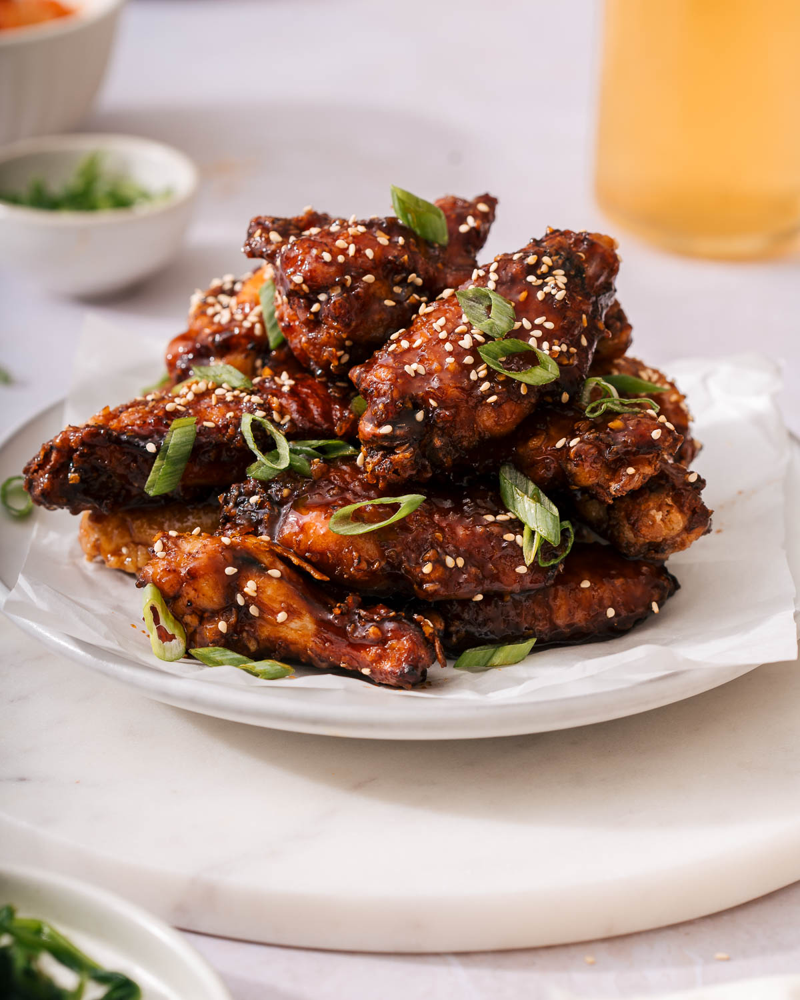

Soy Garlic Fried Chicken
Click here to go back to the main page.

Description
Korean fried chicken is typically deep fried twice and coated with a sauce, like soy garlic sauce or a spicy sauce.
This is a recipe for soy garlic Korean fried chicken.
Ingredients
- 2 pounds chicken wings
- 1.5 tsp salt
- dash of black pepper
- 1 tsp grated ginger
- 4-5 cups of oil for frying
- 1/2 cup potato starch or cornstarch
- 2 Tbsp soy sauce
- 2 Tbsp mirin
- 2 Tbsp sugar
- 2 Tbsp honey
- 1 Tbsp minced garlic
- 1 tsp vinegar
- 4 Tbsp water
Steps
- Mix the chicken wings with salt, pepper, and grated ginger. Let the chicken wings sit in the fridge for at least 2 hours.
- Mix the soy sauce, mirin, sugar, honey, minced garlic, vinegar, and water in a small pan. Boil over medium heat until the sauce thickens slightly, about 4-5 minutes.
- Coat the chicken wings with the starch.
- Preheat oil to 320F. Drop the chicken in the oil, one piece at a time. Fry until lightly golden, about 6 minutes.
- Drain the fried chicken on a wire rack.
- Reheat the oil to 350F. Add the chicken and fry again for about 5 minutes. Drain the chicken.
- Toss the fried chicken in the sauce and enjoy!